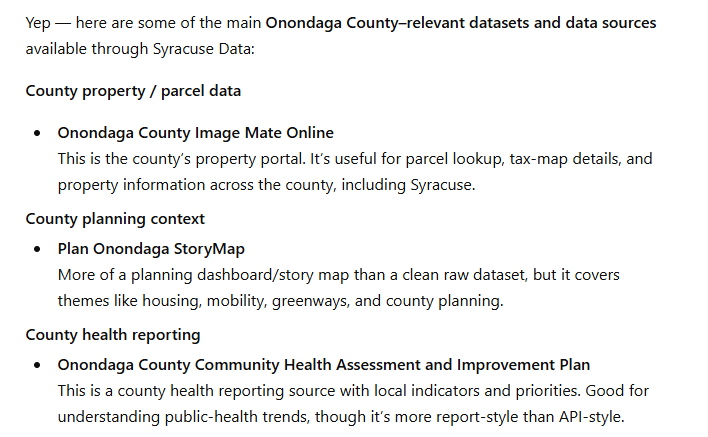
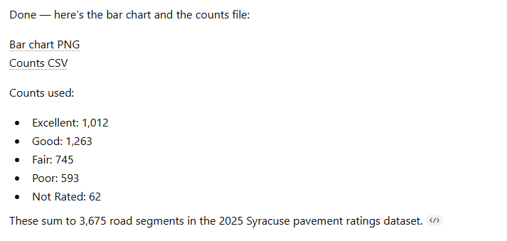

Syracuse data is fragmented. Datacuse MCP makes it usable.
One MCP server for Syracuse open data, Onondaga County Public Libraries, and selected county, state, and federal sources, built so ChatGPT can search, analyze, and act on real local systems instead of treating them like disconnected portals.

Public data is usually available in theory and painful in practice.
Cities publish dashboards, ArcGIS services, CSV downloads, PDFs, portals, and one-off department pages. Libraries run separate catalogs, events systems, and reporting sites. State and federal agencies expose their own APIs and portals. The data is real, but using it across systems still takes too much manual work.
That is the problem Datacuse MCP is trying to solve.


What Datacuse MCP Is
Datacuse MCP is a Model Context Protocol server focused on Syracuse, Onondaga County, and closely related public data sources.
It gives ChatGPT and other MCP clients a single tool surface for:
- Syracuse open data discovery from
data.syr.gov - raw Syracuse ArcGIS REST access for Syracuse datasets
- Onondaga County Public Libraries branch, event, catalog, and account workflows
- curated county, state, and federal datasets relevant to Syracuse and Onondaga County
- live access to selected official APIs like Census, BLS, and Health Data NY
The practical goal is simple: make local public data and local civic workflows usable through natural language.
Why Build This
If you have ever tried to answer basic civic questions with public data, you have probably run into versions of the same problems:
- the official data lives in multiple systems
- one portal lists a curated subset while raw services expose much more
- metadata is inconsistent
- different sources use different identifiers and schemas
- some high-value workflows are not datasets at all
Library usage is a good example. A city data portal may expose geography and service context, but that has nothing to do with whether a specific book is in the catalog, whether a branch has an event this week, or whether a hold can actually be placed from an AI-driven workflow.
Datacuse MCP is opinionated about that. It treats the local data ecosystem as a set of connected but different systems, then exposes them through one MCP server instead of pretending everything is a flat dataset.
What It Can Do Today
Syracuse open data
Datacuse MCP can search and inspect the Syracuse open data ecosystem across both the ArcGIS Hub layer and the raw ArcGIS REST layer. That means it can find datasets by topic, compare curated Hub items to raw REST services, inspect layers and metadata, and query records from public ArcGIS services.
Onondaga County Public Libraries
This is where the project gets more interesting. Datacuse MCP includes OCPL branch metadata, LibCal-backed event discovery, annual library stats, Polaris catalog search and item availability, and browser-assisted account workflows for holds and verification.
That last part is the key distinction. A lot of public data work stops at search and read-only browsing. Datacuse MCP goes further and supports an actual resident workflow: find a book, authenticate through a live browser session, place a hold, and confirm it appears in the account.
County, state, and federal context
Local questions often need non-local sources. A Syracuse or Onondaga County workflow may also need Census demographic context, BLS unemployment trends, or Health Data NY county-level indicators. Datacuse MCP adds a curated geographic source layer and a few live adapters so those sources can sit alongside city and library tools instead of living in a separate research process.
What Makes It Different
1. It treats source systems honestly
Not everything is the same shape. ArcGIS layers, catalog search results, branch pages, library events, annual stats, and account actions are different things. Datacuse MCP does not force them into one fake abstraction. It shares a discovery layer where that helps, then adds domain-specific tools where that is the better design.
2. It is local and practical
This is not a smart city platform pitch deck. It is a working MCP server built around concrete Syracuse and Onondaga workflows: find the right dataset, compare what is public versus what is raw, inspect records, find the right library item, place the hold, and verify the result.
3. It is built for plain-English use
One of the lessons from building this was that tool quality is not enough. If the MCP surface is too low-level, users have to think like implementers instead of users. That is why the project now includes higher-level library workflow tools, so prompts can sound more like:
"Use Syracuse Data to place a hold on this book for pickup at Petit Branch Library."
instead of:
"Search the catalog, resolve the item ref, open the browser login, place the hold, and verify the request table."
What It Is Not
Datacuse MCP is not an official city or library product, a full hosted SaaS, a substitute for secure multi-user auth design, or a production-grade civic data warehouse.
It also depends on upstream systems that can change. Public pages drift. Portal metadata is messy. Browser-backed library flows are inherently more fragile than stable APIs. That is the tradeoff: it is useful now because it works against the systems that already exist, not because those systems were designed for clean machine interoperability.
Why MCP Is the Right Interface
The value of MCP here is not just that AI can call tools. The real advantage is that it gives a structured way for a model to discover capabilities, use the right tool at the right time, preserve context across a workflow, and mix search, data access, and action.
For local public-data work, that is a big deal. The problem is rarely just one API call. It is usually a chain:
- find the right source
- understand what it contains
- resolve the right record or item
- take the right next action
- confirm the outcome
Datacuse MCP is built around that chain.
Where This Could Go
There are obvious next steps: more Syracuse and Onondaga adapters, more state and federal live integrations, better ranking and source preference logic, safer auth and hosting patterns, and a cleaner public-facing app on top of the MCP.
The larger opportunity is not limited to Syracuse. The same pattern could work for any city where the real public-data ecosystem is fragmented across portals, services, dashboards, and operational tools.
Closing Thought
Public data becomes much more useful when it stops being a scavenger hunt.
Datacuse MCP is an attempt to make local civic data and local civic workflows feel coherent, usable, and actionable through one interface.
That is the core idea: not just more data access, but better access to the systems people actually need.